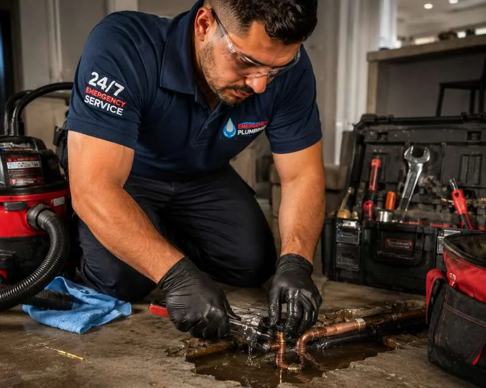
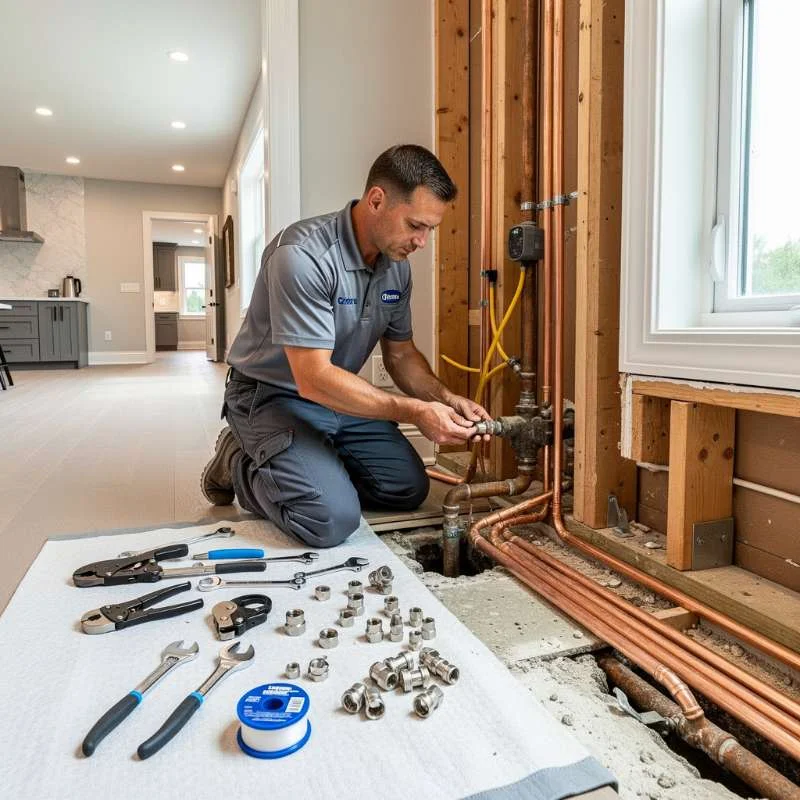
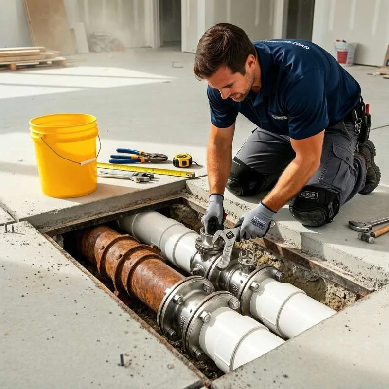
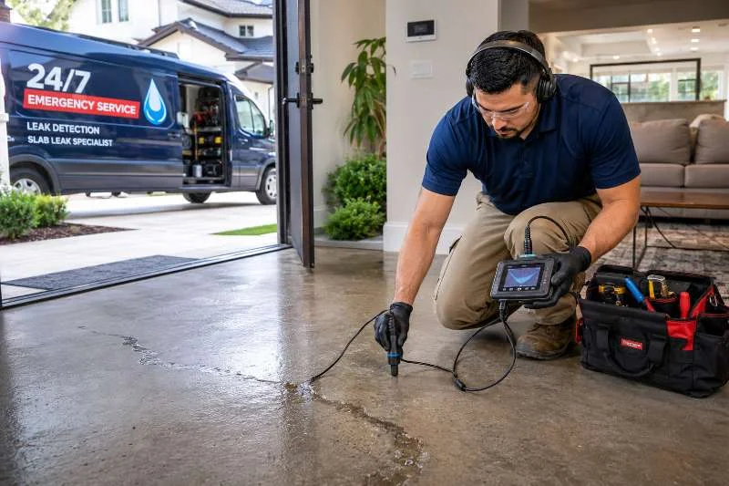

Basic Service
$89 starting · per visit
- Diagnostic visit
- Written estimate
- Same-day scheduling
- 30-day warranty

Slab leak repair in Ridge Road is essential for maintaining the integrity of your home. As a licensed plumber serving the Ridge Road Estates and Ridge Road Village neighborhoods, we understand the unique plumbing challenges faced by residents here. Our team is experienced in handling slab leaks, water damage, and foundation issues that can arise in older homes. We use state-of-the-art leak detection equipment and trenchless technology to provide the best slab leak repair Ridge Road has to offer. With our commitment to quality and customer satisfaction, you can trust us to get the job done right.
In Ridge Road, slab leak repair services are in high demand due to the area's older homes and unique plumbing challenges. We offer a range of services, including 24/7 slab leak repair Ridge Road residents can rely on for emergencies. Our team is equipped to handle any slab leak issue efficiently.
In Ridge Road, several factors contribute to slab leak issues, including the age of homes and local soil conditions. Here are some common problems we encounter in the area.
Many homes in Ridge Road, especially older ones, have plumbing systems that deteriorate over time, leading to leaks.
Local soil conditions can cause foundations to shift, putting stress on plumbing lines and resulting in leaks.
Some older homes may have plumbing that was not installed to code, increasing the risk of leaks.
Excessively high water pressure can strain pipes, leading to leaks and bursts, especially in older plumbing systems.
Identifying the signs of a slab leak early can save you from extensive damage and costly repairs. Here are some common indicators that you may need slab leak repair in Ridge Road.
Unexplained water pooling in the yard
If you notice water pooling in your yard, it may indicate a slab leak. This can lead to foundation issues if not addressed promptly.
Constantly running water meter
If your water meter continues to run even when no water is being used, it could mean there's a leak in your plumbing system.
Cracks in walls or floors
Visible cracks in your walls or floors may be a sign of shifting foundations caused by water damage from a slab leak.
Damp or moldy spots on floors
If you notice damp spots or mold growth on your floors, it's crucial to call for slab leak repair immediately to prevent further damage.
Increased water bills
A sudden spike in your water bill can indicate a hidden leak, making it essential to have your plumbing inspected as soon as possible.
Slab leak repair costs in Ridge Road can vary based on several factors, including the extent of the damage and the specific repairs needed. Typically, homeowners can expect to pay between $1,500 and $5,000 for comprehensive repairs. Factors that can increase costs include the complexity of the leak, access issues, and the materials required. Our team provides affordable slab leak repair Ridge Road residents can trust, ensuring transparency in pricing and no hidden fees.
Basic Service
$89 starting · per visit
Standard Repair
$249 average job
Premium Care
$499 annual plan
Navigating Ridge Road is easy thanks to its recognizable landmarks. Our team often uses Ridge Road Park as a reference point when servicing the area. This park is not only a local gathering spot but also a landmark that helps us efficiently reach our clients. We also service homes near the Ridge Road Community Center, ensuring that residents receive timely slab leak repair in this bustling area.

This central park is a well-known landmark, helping us navigate the area efficiently while providing services.

A popular hub for local events, we often service nearby homes, ensuring our clients receive prompt attention.

Our team frequently works in the vicinity of this school, addressing plumbing issues for families in the neighborhood.
Plus surrounding Suffolk County neighborhoods, with same-day routing on most appointments.
Averaging 4.8 / 5 across verified reviews.
“Slab Leak Repair Pros did a fantastic job fixing my leak under the slab. They were prompt and professional, and the problem was resolved quickly.”

Sarah L.
Ridge Road Estates
“I was impressed with their knowledge and efficiency. They used the latest technology for leak detection, and I appreciated their transparency throughout the process.”

Tom R.
Ridge Road Village
“Great service! They arrived on time and fixed my slab leak without any hassle. Highly recommend to anyone in Ridge Road needing plumbing work.”

Linda M.
Lakeview Estates
Ridge Road's climate can significantly impact the demand for slab leak repair services throughout the year. Understanding these seasonal trends is crucial for homeowners.
As temperatures rise and the ground thaws, slab leaks often become more apparent due to shifting foundations and increased water flow.
Tip: Inspect your plumbing for leaks after winter to catch any issues early.
Hot weather can exacerbate existing leaks, leading to higher water bills and increased demand for repairs.
Tip: Monitor your water usage closely during summer months to catch leaks early.
As temperatures drop, the ground may settle, causing additional strain on plumbing systems and potential leaks.
Tip: Schedule a plumbing inspection before winter to ensure your system is ready for colder weather.
Cold temperatures can cause pipes to freeze, leading to bursts and slab leaks if not properly insulated.
Tip: Ensure your pipes are insulated to prevent freezing and potential leaks this winter.
Our service area extends beyond Ridge Road, covering several nearby cities to ensure residents have access to quality slab leak repair services.
(City)
Just a short drive from Ridge Road, we frequently service homes in Downtown Rockwall, addressing their plumbing needs.
View Downtown Rockwall(City)
Located nearby, The Shores often sees similar plumbing issues, making our services in high demand.
View The Shores(City)
Chandlers Landing is just a few miles away, and we regularly provide slab leak repair services to its residents.
View Chandlers Landing(City)
We also extend our services to Stone Creek, ensuring all local residents have access to our expertise.
View Stone CreekReal answers from our team for the questions we hear most often before a job starts.
If you're facing slab leak issues, our team is ready to help. We offer reliable and affordable slab leak repair in Ridge Road. Contact us today for a free estimate and experience our commitment to quality service.
We're here to help with all your slab leak repair needs. Reach out to us anytime, and we'll respond quickly. Our team is available 24/7 to assist you.
Phone
+1 (469) 368-2424Address
105 W Washington St, Downtown Rockwall, TX 75087
Hours
Mon–Fri: 7AM – 7PM
Sat: 8AM – 4PM
Sun: Emergency Only
24/7 Emergency Available